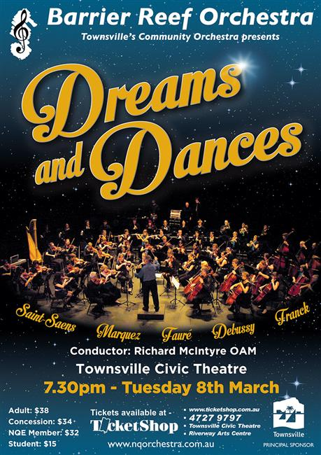

Guest Conductor:
Richard McIntyre
| Conductor: | Richard McIntyre |
|---|---|
| Program: | |
| Saint-Saens: | Danse Bacchanale from Samson and Deliah |
| Faure: | Pavane in F sharp minor Op. 50 |
| Debussy: | L’Apres-midi d’un Faune |
| Arturo Marquez: | Danzon No. 2 |
| Franck: | Symphony in D minor |
| Concert Master: | Stephen Frewen-Lord |
|---|---|
| Rehearsal Conductors: | Andrew Ryder, Ben Fixter & Glen Rogers |
| Violin I: | Stephen Frewen-Lord (leader), Margot Doherty, Stacey Lun, Amy Schmidt, Florence Cappler-Shillington, Elena James, Jane Poon, Michael Wong. |
| Violin II: | Alexandra Gorton (leader), Melanie Laird, Lauren Jones, Ellen Conrad, Sophie Gregory, Hannah Curnow, Stephanie Rigano, Sam Smith, Willem Weibach, Victoria Kanowski, Suva Leitch. |
| Viola: | Susan Fraser (leader), Caroline Lloyd-Doolan, Aidan Fitzgerals, Emily Matthews, Lotta Lindgren, Beth Wildinson. |
| Cello: | Wade Tattersall (leader) Ivy Wu, Arabella Campbell, Rebecca Marki, Carole Radovanovic, Margaret Loftus, Michael Carroll. |
| Double Bass: | Olivia Adcock (leader) Stephen Kluver |
| Flute: | Shinako Macdonald, Manuela Weibach |
| Piccolo: | Manuela Weilbach |
| Oboe: | Bernie Girard (Brisbane) Georgina Kanowski |
| Cor Anglais: | Anneka Celotto (Brisbane) |
| Clarinet: | Jacinta Payne, Monika Ward |
| Bass Clarinet: | Jacalyn Adcock |
| Bassoon: | Sarah Hill, Helen Land |
| Horn: | Andrew Ryder, Annie Doherty, Jessica Brake (Mackay), Daniel Harley |
| Trumpet: | Arthur Florence, Suzanne Darrigan |
| Cornet: | Ben Fixter, Harrison Murray |
| Trombone: | Dylan Troyahn, Mark Land, Julie Bingley |
| Tuba: | Andrew Hodgson |
| Harp: | Leah Li |
| Piano: | Stephanie Rigano |
| Timpani: | Noel Price |
| Auxiliary Percussion: | Ruby Ansic, Ben Fixter, Sally Frewen-Lord, Harrison Murray |
Guest Conductor:
Richard McIntyre